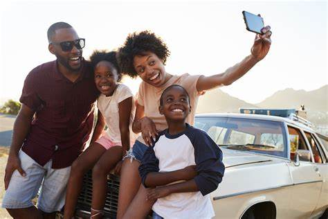
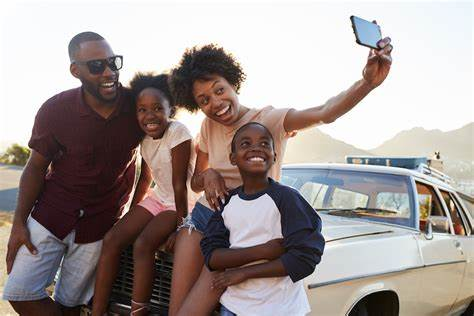

Hi, Im Octavia Morris!
-
Originally From Jersey "The Shore side of Things!" and became a lover for the South!
Since moving to North Carolina 15 years ago, I have come across some beautiful locations and I am excited to share them with you. These locations are outisde of the Raleigh area but so worth the drive.
If I can, I love to travel home during the spring time where my family is able to get some exploring in without complaining about being super hot or freezing.
So traveling the same road can get a little boring at times, but when your traveleing to a new adventure,where you're about the create memeories, the excitment is beyond words.
Since I love to travel and having a family of 7 can be a handful, we make traveling fun, so fun, that we wished we had more days like that to enjoy.
These places we come across are like hidden gems, they're barely advertised or a few people know about it. So I'm here to "Spread The Love"!!!
My Goal is to Impress you on "Specific Locations" that's barely talked about!!!
I plan to update my webpage every three months with a new 'WOW' locations including images, videos and guides on how to plan for these locations.